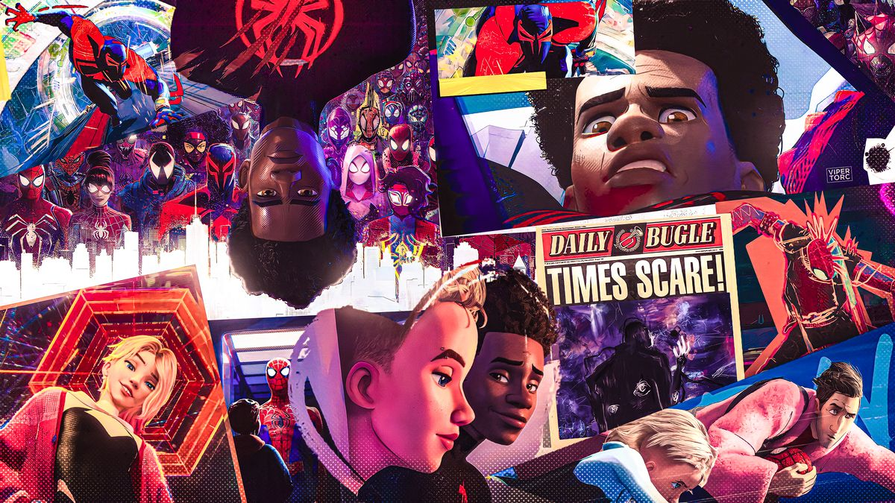

Synopsis

새로운 스파이더맨 평행세계의 시작! 평범한 10대 ‘마일스 모랄레스’는 우연히 방사능 거미에 물려 스파이더맨 능력을 가지게 된다.
혼란스러워하던 ‘마일스’는 악당과 싸우고 있는 ‘피터 파커’를 마주치게 되고 ‘피터 파커’는 ‘마일스’가 자신과 같은 능력을 가지고 있음을 직감한다.
여러 개의 평행세계가 존재한다는 것을 알게 된 ‘마일스’와 ‘피터 파커’는 이후 스파이더우먼 ‘스파이더 그웬’, ‘스파이더맨 누아르’, ‘스파이더햄’ 등
평행세계 속 공존하는 모든 스파이더맨들을 만나게 되는데… 하나의 유니버스에서 만나 팀을 결성한 스파이더맨들은 과연 세계를 구할 수 있을까?
올겨울, 스파이더맨들의 새로운 시대가 열린다!